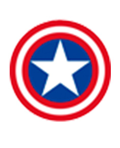
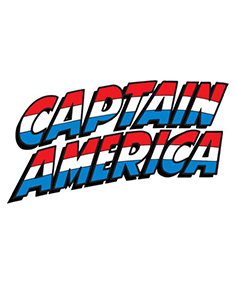

Marca
LOGO

El logo de Capitán América es un diseño que representa su escudo, con una estrella blanca sobre un círculo azul rodeado por franjas rojas y blancas. Es un símbolo de patriotismo y heroísmo, basado en la bandera de los Estados Unidos. Este emblema es reconocido mundialmente como el distintivo del personaje y se utiliza en diversos medios relacionados con Capitán América.
TIPOGRAFÍA

La tipografía utilizada para el nombre "Capitán América" en los cómics y en la mayoría de las representaciones oficiales del personaje suele ser una versión modificada de la tipografía "Avengers Assemble". Esta fuente tiene un aspecto fuerte y audaz que refleja el carácter heroico y poderoso del Capitán América. Presenta letras anchas y estilizadas, con bordes afilados que transmiten una sensación de fuerza y determinación.
PALETA CROMÁTICA

La paleta cromática del Capitán América se compone principalmente de rojo, blanco y azul, reflejando los colores de la bandera de los Estados Unidos. Estos colores simbolizan la valentía, la pureza y la justicia, y son icónicos en la representación visual del personaje.